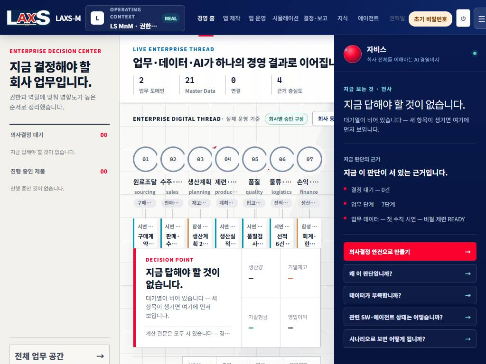
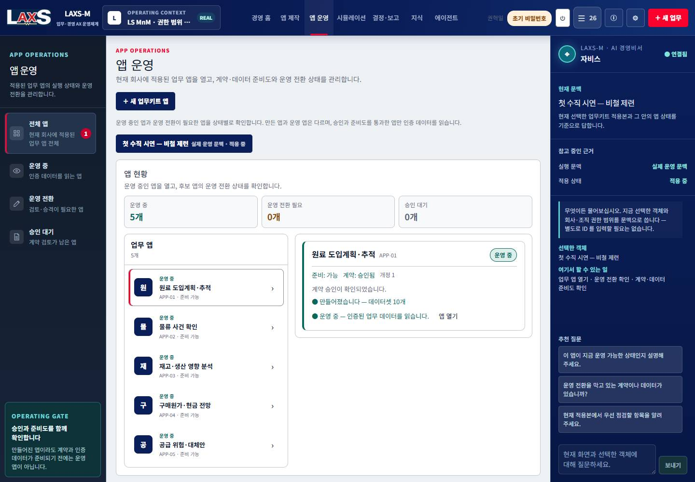
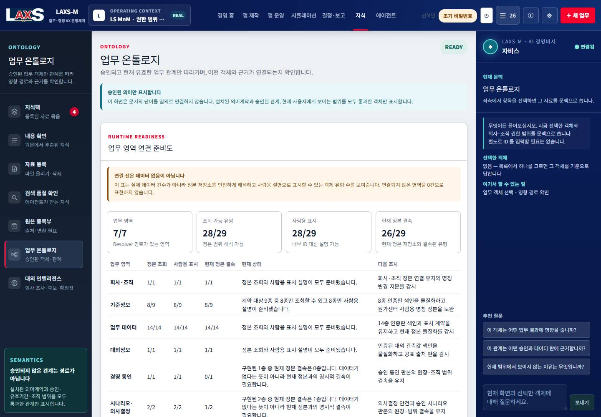

판정 요약
26/26전체 메뉴 접근
0건메뉴 순회 중 HTTP 4xx/5xx
7/7상단 주요 화면 자비스 표시
부분 통과로컬 시연 준비성
결론
메뉴 접근성과 1440px 기본 골격은 통과했습니다. 그러나 1024px 잘림, 시뮬레이션 기준값 단절, 대외 인텔리전스 정본 부재, 내부 코드와 철회 문구 노출 때문에 실제 시연 완료로는 판정하지 않습니다.
메뉴 접근성과 1440px 기본 골격은 통과했습니다. 그러나 1024px 잘림, 시뮬레이션 기준값 단절, 대외 인텔리전스 정본 부재, 내부 코드와 철회 문구 노출 때문에 실제 시연 완료로는 판정하지 않습니다.
확인 범위
| 대상 | 실측 결과 | 판정 |
|---|---|---|
| 로그인·회사 문맥 | 권혁일 계정 로그인, `LS MnM · 권한 범위 전체`, `REAL` 표시 | 통과 |
| 전체 메뉴 | 기본 진입 2개와 전체 메뉴 24개를 실제 클릭. 모든 화면 열림, 오류 경계와 4xx/5xx 없음 | 통과 |
| 상단 주요 화면 | 경영 홈·앱 제작·앱 운영·시뮬레이션·결정·보고·지식·에이전트에서 자비스와 질문 입력 확인 | 통과 |
| 지식 | 지식팩 4개·문서 27건. 배터리소재 팩 선택 시 문서 4건과 등록일·설명이 문맥에 반영 | 통과 |
| 업무 온톨로지 | 그래프·승인 관계·관계 상세가 표시됨. 조회/표시 28/29, 현재 정본 결속 26/29 | 일부 |
| 대외 인텔리전스 | 지표 6개 중 사용 가능 0, 회사 조사 프로필·승인 원천·후보 0, 봇 1/4만 예행 가능 | 문제 |
| 시뮬레이션 | 인증판 35개 선택은 가능하지만 현재 계약키가 기준값 추출기의 자료명과 이어지지 않아 7개 기준값이 모두 비어 있음 | 문제 |
| 반응형 UI | 1440px 정상. 1024px에서 중앙 제목·회사 구성 버튼·상단 제어 일부가 우측 자비스 아래로 잘림 | 문제 |
수정 필요 항목
| ID | 우선순위 | 발견 | 완료 조건 |
|---|---|---|---|
| QA-UI-01 | P1 | 1024px에서 우측 자비스가 중앙 콘텐츠를 가리고 상단 제어가 잘린다. | 1024·1280·1440px에서 헤더·중앙·우측 레일의 겹침과 비의도 잘림 0건 |
| QA-SIM-01 | P1 | 35개 인증판을 고른 뒤에도 `material_arrivals`·`financials`·`purchase_orders` 자료가 없다고 판정해 기준값을 채우지 못한다. | 현재 업무키트 계약키와 시뮬레이션 입력 투영을 연결하고, 기준값 7개가 인증판 근거와 함께 채워짐 |
| QA-EXT-01 | P1 | 회사 조사 프로필·승인 원천·검토 후보가 모두 0이며 기준계획 사용 가능 지표도 0/6이다. | 합성 회사 프로필과 승인 가능한 원천·후보를 준비하고, 최소 한 지표가 출처·발표판과 함께 검토 흐름을 통과 |
| QA-CONTENT-01 | P1 | 경영 브리핑 첫 항목에 사용하지 않기로 한 「입력 불일치 사례」와 `shadow_run` 내부 ID가 노출된다. | 업무 효과 중심 제목으로 교체하고 내부 ID는 화면에서 제거. 근거는 사람용 명칭으로 연결 |
| QA-ID-01 | P1 | 앱 운영 목록과 상세에 `APP-01`~`APP-05` 내부 코드가 노출된다. | 업무명·상태·소유 조직으로 식별하고 내부 코드는 상세 진단 권한에서만 선택적으로 표시 |
| QA-ONTO-01 | P2 | 29종 중 현재 정본 결속이 26종이며 폐지 관계 일부 객체는 「이름 미등록」이다. | 미결속 3종과 사람용 명칭 공백의 담당·처리 시점을 명시하고 시연 경로에는 이름 미등록이 나오지 않음 |
화면 증거
1024px 홈 — 중앙 콘텐츠 잘림

1440px 앱 운영 — 공통 3열 골격

업무 온톨로지 — 실제 승인 관계 그래프

재현과 재검증 순서
01P1 보정반응형·ID·브리핑 문구
02데이터 연결시뮬레이션 입력 투영
03대외 정본프로필·원천·후보
04집중 재검증위 6건만 먼저
05전체 점검78개 기능 항목
06실행 증거시뮬레이션 결과·근거
07완료 판정미확인 0건
이번 실행은 화면 접근과 조회 중심입니다. 승인·등록·삭제·시뮬레이션 실행처럼 운영 저장소를 바꾸는 행동은 수행하지 않았습니다. 기준 HEAD는 658c312bc이며 작업트리에는 별도 구현 변경이 존재했습니다.